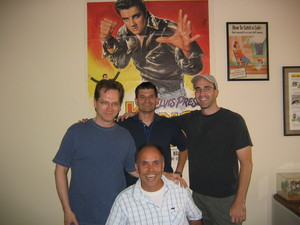

New Faces
Sorry its been a while since this blog was last updated. We've experienced some major changes specifically in the name department. From this day forth the lovable character Wubby shall now be known as the lovable character... WUBBZY!! There are many reasons for the name change which we will get into in another posting. Sooo many new and exciting things have happened in the world of Wubbzy that frankly, its been difficult to keep up with all that is (in a word)...WUBBZY!! Though it's no excuse for the recent lack of blogging, we've been very busy preparing story boards, translating them to Flash, and recording the actors' (that's right, actors!) voices.
By the way, I'm Ari, aka Ms. Scan-A-Lot 9 see the June 13th post). Don't worry I still scan when duty calls but I will also be periodically updating the Wubblog. Here are some of the new faces around the city of Wuzzleburg:
 These are the crazy Story Board guys. The strapping young bucks standing up from left to right are Mike Sosnowski, Peter Mekis, and Bill Thyen. The happy fellow sittng down is none other than Karl Toerge. They all have unique and interesting factoids that make them the wonderful people that they are...and here are some of those factoids:
{kind=link}
Mike Sosnowski has been in the animation business since 1978 and he has been a story board artist for 20 of those 29 years. His first job was working with Ralph Bakshi on an animated version of The Lord of the Rings. He graduated from the Art Institute of Pitsburg with a degree in cartooning and illustration. He is also a comic book writer and illustrator and loves anything to do with monsters. By day he is a story board artist for the adorable show "Wubbzy, Widget and Walden", but by night, he lets his alter ego take over and he draws monsters. Monsters that come alive and eat small shrubs in the gardens of unsuspecting civilians...possibly. Actually he had a sculpture published in "Illustrator's Annual" called Spectrum. Despite his creepy undercurrents, we're super happy that he's a part of the Wubbzy team! Here are some of the model sheets he keeps around for inspiration:
{kind=link}
Peter Mekis has been in the animation business for 8 years. The first show he ever worked on was "C-Bear and Jamal" at Film Roman. The last show he worked on was "Sherm's Germs" in Germany. He graduated from Pitsburgh Techincal Institute with a degree in Cartooning and Illustration. He is a Libra and his birthday is on October 17th. His hobbies include watching movies and doing pilates. Some of the major infrluences in his life are Spiderman and Star Wars. Here is his rendition of "Spider-Wubbzy"!

Bill Thyen was born on May 12th which would make him a Taurus. His hobbies include painting and sketching . He graduated from Cal Art. The most prominent influences in his career, and or life, are Ameriacn illustrators of the early 20's and 30's. You might be wondering "why does he look so much stronger than all the others?" The answer is simple, Bill used to be a physical trainer.
 These are the thumbnails for the upcoming episode "Wubbzy in the Woods" done by Karl Toerge. He is the story board supervisor, or as he likes to be referred to, the ruler of the universe. He is returning to Film Roman after several years. And this is an extra special occasion because he is actually reuniting with Bob Boyle, having worked together on "Bobby's World". He is also a Virgo and enjoys long wlks on the beach as opposed to cozy nights by the fire.
These are the thumbnails for the upcoming episode "Wubbzy in the Woods" done by Karl Toerge. He is the story board supervisor, or as he likes to be referred to, the ruler of the universe. He is returning to Film Roman after several years. And this is an extra special occasion because he is actually reuniting with Bob Boyle, having worked together on "Bobby's World". He is also a Virgo and enjoys long wlks on the beach as opposed to cozy nights by the fire.
i would pay a lot for a spiderwubbzy drawing...
Posted by: susan miller | July 20, 2005 at 01:24 PM
I love Wubbzy!!!! My favorite epesode is when is when Wubbzy gets Tiny the Fleeble from the Pet truck.
Posted by: Olivia | August 28, 2006 at 08:38 PM